Motivation & Research
Rationale, Benchmarking, Personas
This section introduces why the project exists, what gap it addresses, and how background references shaped the direction.
CPT208 Human-Centered Computing Group Project
UniBuddy is a playful campus navigation concept designed for new students and visitors. Instead of only showing where to go, it aims to make campus exploration easier, warmer, and more memorable through route guidance, visual storytelling, and lightweight interaction.
This section introduces why the project exists, what gap it addresses, and how background references shaped the direction.
This page shows user journeys, core needs, and observation-based evidence gathered during the research process.
This section presents early concepts, design comparisons, and low-fidelity structure planning before implementation.
This page explains how the prototype was built, deployed, and divided across team contributions.
This section summarizes testing outcomes, improvement decisions, and what the team learned from the full process.
This page introduces the four group members with photos, IDs, names, and role-based summaries.
Our group chose the "Social" track, focusing on the campus tour for the XJTLU SIP campus. When navigating our large campus, our two main target users—freshmen and visitors—often feel lost. Freshmen urgently need to break the ice and build a sense of belonging, while visitors want to experience the campus culture in a limited time. However, current navigation tools only offer cold "Point A to Point B" physical routing, ignoring the potential emotional connections between people and the campus.
To address this, we developed the "UniBuddy" campus exploration system. For basic needs, it provides building information, facility locations, real-time positioning, and clear classroom routing. More importantly, UniBuddy acts as a warm social medium. We introduced gamification designs like "Blind Box Routes" and "Stamps Collection" to turn boring navigation into a fun journey. We also added a campus review and comment section. These features encourage users to actively explore. By sharing unique routes, showing off stamps, and exchanging thoughts, users can naturally start conversations.
We chose the social track because exploring physical spaces is a great bridge for social interactions. UniBuddy aims to give the XJTLU campus a stronger social attribute, helping freshmen integrate into the community and deepening visitors' appreciation, ultimately turning a physical campus into a connected social hub.
Age: 18
Role: First-year student
Scenario: Walks around campus during the first week, trying to locate essential services while learning what nearby academic buildings are for.
Goals & needs: Find service points quickly, understand academic buildings, and manage time better in an unfamiliar environment.
Pain points: Campus scale is overwhelming, maps only show names, and it is hard to connect spaces with future study interests.
Age: 35
Role: High school parent
Scenario: Uses the web app's highlight-tour style route on an Open Day to explore representative landmarks with his child.
Goals & needs: Discover iconic buildings, experience campus culture, and follow a curated route with concise background information.
Pain points: Unfamiliar campus layout, no personal guide, and long text descriptions feel overwhelming.
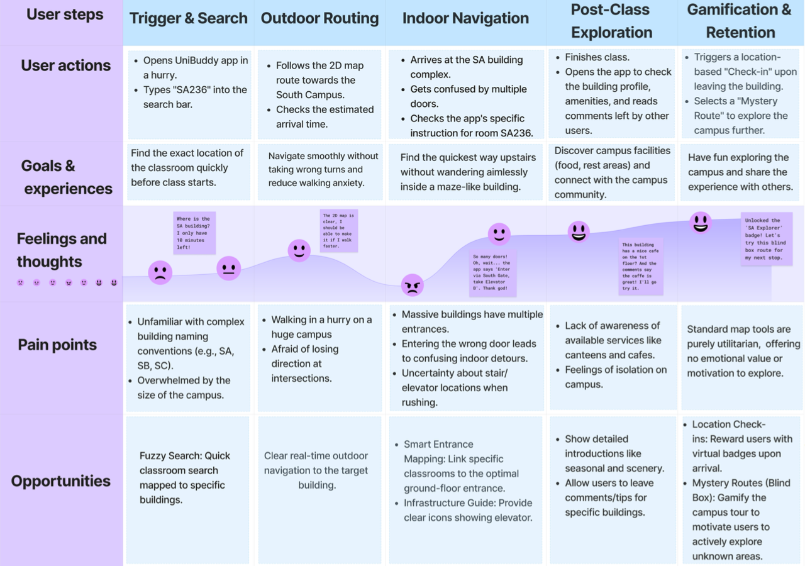
The journey map highlights that user needs shift from urgency, to route confidence, to social and emotional engagement. This helped us translate observational findings into concrete interface opportunities rather than only route features.
The team explored multiple early directions through rough sketching, route ideas, page flows, and interface composition before moving toward the final prototype.
Map-first utility: efficient but emotionally weak.
Narrative route companion: balanced, social, and better for newcomers.
Game-heavy challenge mode: engaging, but less practical for orientation.
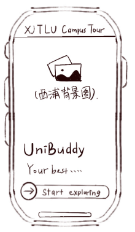
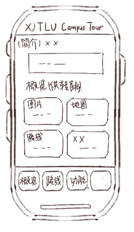
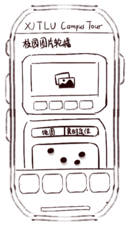
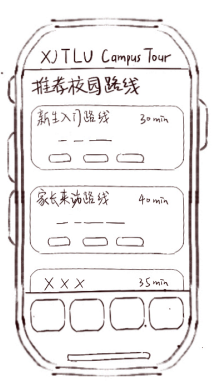
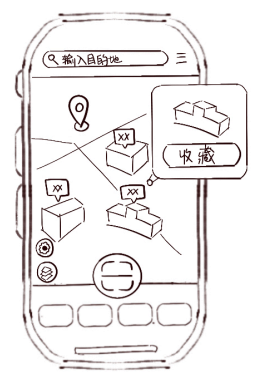
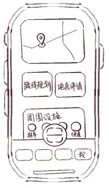
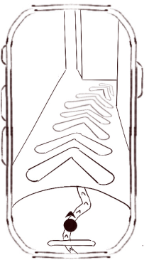
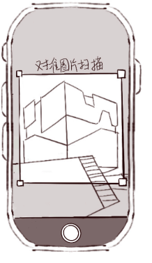
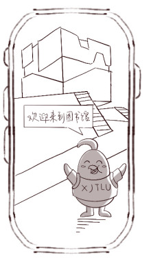
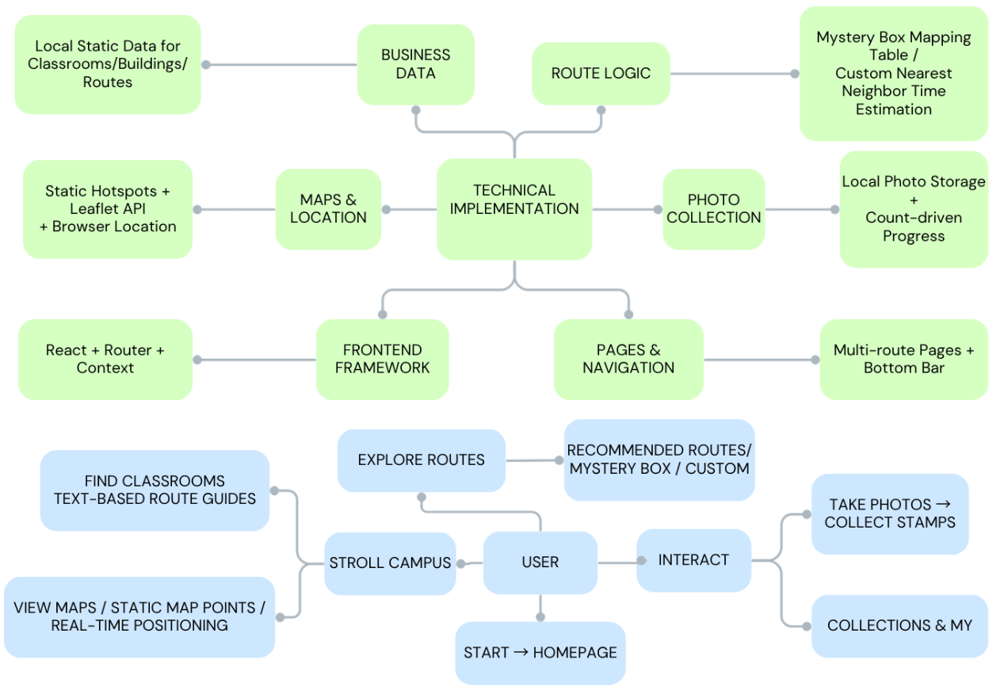
The prototype combines local content resources with route logic and client-side navigation so that the experience stays lightweight and suitable for a web-based project environment.
CJY focused on UI design, TZY on frontend implementation, WJY on research and content structure, and XXY on testing and documentation.

ID: member1
Name: TZY
Intro: Worked on frontend development, responsive structure, and implementation of the portfolio and system pages.

ID: member2
Name: XXY
Intro: Supported user testing, process documentation, and organization of portfolio materials and evaluation results.

ID: member3
Name: WJY
Intro: Contributed to research review, content writing, and analysis of academic and commercial references.

ID: member4
Name: CJY
Intro: Focused on interface design, visual consistency, and the playful system style of the project.